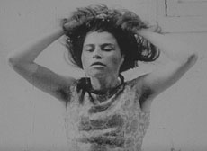

|
LETTRE À LA PRISON (Letter to the Prison)
Marc Scialom | F 1969 / 2008 | 70 Min.
Material: 16mm
Format: 35mm
Originalsprache: Französisch
Buch: Marc Scialom
Kamera: Marc Scialom
Schnitt: Marc Scialom
Musik: Matar Mohamed
Mit Tahar Aïbi, Marie-Christine Lefort, Myriam Tuil, Marie-Christine Rabedon u.a.
Restaurierung: L'Immagine Ritrovata - Cineteca de Bologna, Film flamme, Marseille
Produktion: Film flamme-Le SACRE
Vertrieb: Film flamme
GNCR Besondere Erwähnung, FID Marseille 2008
www.polygone-etoile.com
Deutsche Erstaufführung
Der junge Tunesier Tahar wird von seiner Familie nach Frankreich geschickt, um seinen Bruder zu besuchen, der in Paris des Mordes angeklagt ist und im Gefängnis sitzt. In Marseille angekommen, setzt Tahar seine Reise jedoch nicht fort – stattdessen beginnt er, durch die Stadt zu wandern. Seine Odyssee dient Scialom als Anlass, jene Bedingungen zu schildern, die die Ende der 60er Jahre aus Nordafrika nach Frankreich strömenden Arbeitsimmigranten vorfanden. Der stillen Poetik seiner langen Einstellungen zum Trotz verstört an Lettre à la prison der Eindruck, dass eine solche Wanderung wie die Tahars vierzig Jahre später noch genauso geschehen könnte. – Viennale
LETTRE A LA PRISON wurde 1969 gedreht, die Filmrollen jedoch blieben aufgrund der ausbleibenden Finanzierung in Frankreich unentwickelt. 2008 entdeckte sie Marc Scialoms Tochter Chloe durch Zufall, ließ sie entwickeln und eine Kopie ziehen. Sie entdeckte einen herausragend photographierten, atmosphärischen Film über die ersten tunesischen Einwanderer der sechziger Jahre. 2009 kam Lettre à la prison in Frankreich in die Kinos.
Der Film wurde vom Labor Immagine ritrovata an der Cineteca de Bologne restauriert (Bild), in Zusammenarbeit mit Film Flamme, Atelier für unabhängige Filmproduktion in Marseille (Ton).
Marc Scialom, geb. 1934 in Tunis mit jüdisch-italienischer Abstammung, kommt Ende der 1950er Jahre nach Frankreich. 1966 gewinnt er mit seinem Kurzfilm EXILS in Venedig den Goldenen Löwen. Zahlreiche Kurzfilme über Exil und die postkolonialen Kriege folgen. Nach seinem vergeblichen Versuch, 1970 in Frankreich einen ersten eigenen Langfilm LETTRE A LA PRISON herauszubringen, unterrichtet er an der Sorbonne und der Universität von Saint-Etienne. Er arbeitet als literarischer Übersetzer und hat zwei eigene Romane herausgebracht, Loin de Bizerte und La Machine réalité.
zurück
|